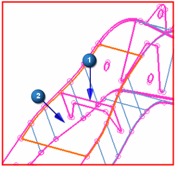
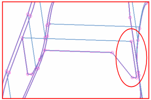

Examine the assembly. You just stitched the BOOM_RIB_1 component to the right side of the part. You now need to stitch the BOOM_RIB_2 component to the right side of the part, but this time you will use a different workflow.
Using the steps you learned previously, stitch the top of the BOOM_RIB_2 component to the BOOM_TOP component.
|

|
Rotate the assembly until you can see where the edge of the BOOM_RIB_2 component is relative to the BOOM_RIGHT component. You can see that there is a large gap between the edge and the face.
